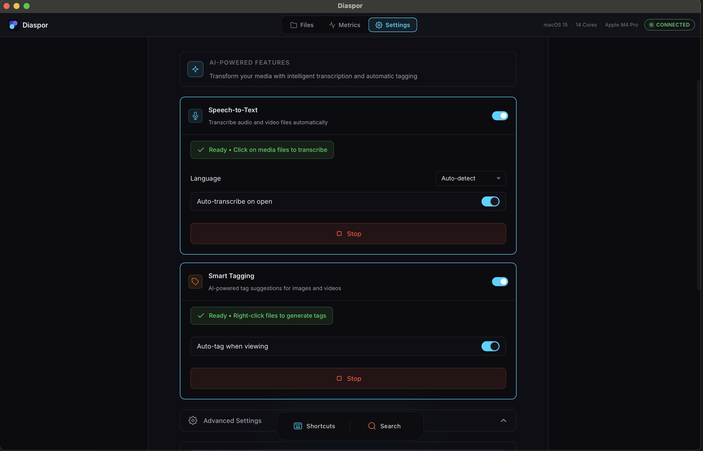
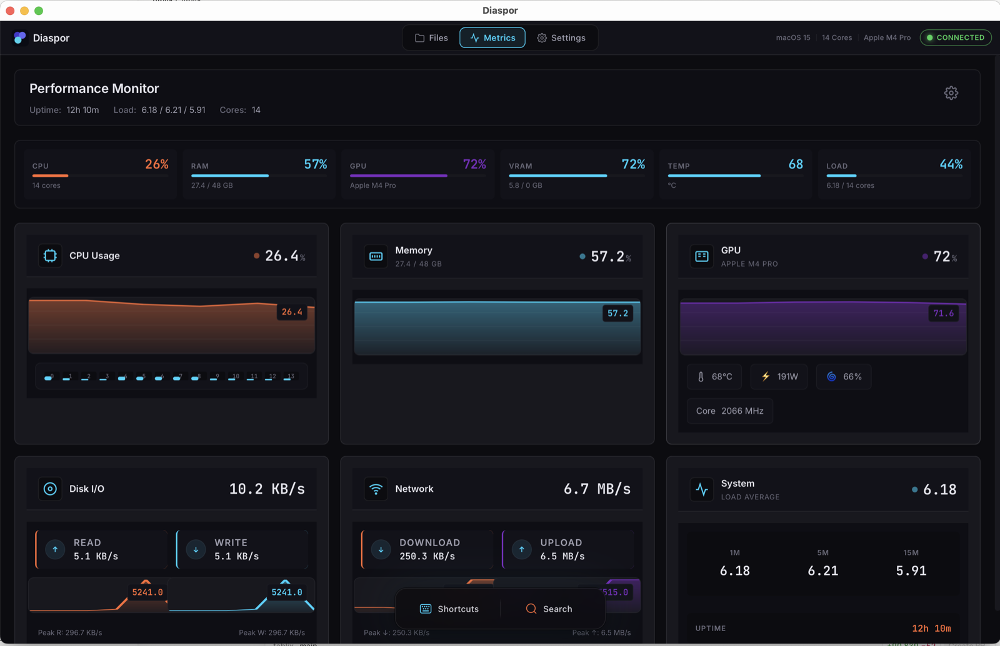
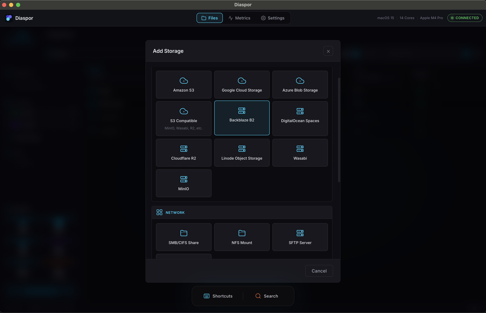

Diaspor Desktop.
Native app for macOS, Windows, Linux. Auto-tag video archives, transcribe meetings, analyze live WebRTC · HLS · RTSP streams — all on-device.
For: creators, prosumers, small teams.
Join the waitlist →
ca-central-1
Put AI to work on everything your organization has recorded — right where it already lives — and surface any moment in seconds. Your proprietary data and IP never leave your perimeter, you skip the per-token cloud AI bill, and it all runs on infrastructure you already own — in Canada, for less.
● Rust 2024 · whisper.cpp · FFmpeg · FUSE · 100% on-device
ca-central-1Closed source, built in Québec, and engineered to run on infrastructure you already own — hosted in Canada (ca-central-1) only if you'd rather we operate it.
Native app for macOS, Windows, Linux. Auto-tag video archives, transcribe meetings, analyze live WebRTC · HLS · RTSP streams — all on-device.
For: creators, prosumers, small teams.
Join the waitlist →
Virtual Distributed Filesystem in Rust 2024. One async API across memory, local, FUSE, WinFsp, S3, NAS. SDK · CLI · REST API.
For: developers and ISVs embedding file intelligence.
Talk to us about embedding →
Nine proprietary AI capabilities: auto-tag, transcription FR/EN, vision, 3D pose, prosody, credibility, Judge Assistant, diarization, live stream. Plugs into Engine + Desktop.
For: enterprises, federations, regulated sectors.
Request enterprise pricing →
Rust 2024 · runs on any infrastructure you control · closed source · Diaspor™ filed 2026-05-19 · Loi 25 + PIPEDA + Bill 96 by design.



Drop into the infrastructure you already run — or simply point Diaspor at it. Every major cloud, every on-prem and bare-metal backend, under one mount surface. Zero copy. Your data, your perimeter.
Same async API everywhere. No vendor lock-in. No surprise egress fees.
Memory · local · FUSE (macOS/Linux) · WinFsp (Windows) · S3 · NAS/SMB · RTSP. One async API. One mental model.
The pipeline reads files where they live. Tags, transcripts and embeddings go to a separate metadata store. Originals never move.
CI runs every test inside unshare --net. Build fails if any module opens a socket without explicit opt-in. The privacy contract is structural, not aspirational.
Your CPU, GPU and disk do the work. Diaspor scales linearly with your infrastructure — and nothing else.
ca-central-1FUSE · AES-256Cloud AI meters every call and bills it back forever. Diaspor runs on hardware you already own — the meter stops at your power bill.
Pay once for hardware you keep — not a meter that runs every time your team hits “analyze.” Priced in CAD · hosted in ca-central-1 when hosted · zero US sub-processors.
Native installers for the multi-tier file browser. On-device tagging, transcription, and live-stream analysis — everything the CLI does, with a window.
macOS DMG is unsigned during alpha — right-click the app and choose Open on first launch, or run xattr -d com.apple.quarantine /Applications/Diaspor.app from Terminal.
Find your sector. Diaspor Desktop, Engine and Models adapt to the workflow — the privacy contract doesn't change. Same Rust 2024 stack. Same Canadian sovereignty. Same hardware bill.
Deposition indexing + semantic search · bilingual hearing transcription (FR/EN) · evidence video analysis (CCTV, dashcam, body-cam) · cross-examination prep · credibility signals (decision-aid only).
Body-cam indexing + batch transcription · RTSP CCTV real-time analysis · investigation interviews with non-verbal analysis · auto-indexed disclosure · evidence video triage.
Judge Assistant AI for refereeing neutrality · 3D pose analysis (33 keypoints) · training video review · automatic highlight detection · competition archive indexing.
MAM auto-tagging · bilingual auto-subtitling · chronological newscast indexing · live HLS transcription · Loi 96 broadcast compliance.
Auto-transcription of podcasts (Quebec FR + EN) · long-form video auto-chaptering · stream archive search · show notes / summary generation · RAW footage indexing for editing.
Medical video anonymization (PHIPA + Loi 25) · consultation transcription · radiology/ultrasound archive indexing · semantic search across visits · patient behaviour analysis (autism, motor disorders).
Searchable lecture transcripts · auto FR/EN subtitles · research video corpus analysis (kinesiology, social sciences) · lab experiment auto-annotation · plagiarism detection on video presentations.
Council session archive · bilingual parliamentary indexing · Loi 25-compliant records management · traffic-camera event detection · Loi 96 content compliance.
Compliance call recordings (AMF, FINRA) · KYC video analysis (remote client onboarding) · regulated recruitment interview indexing · non-verbal fraud detection · audit-ready archive with signed logs.
Claims video analysis · non-verbal fraud detection · claimant interview indexing · loss inspection batch workflow · SIU investigator support.
Interview video indexing (search by competency) · auto-transcription for HR notes · DEI/equity compliance recordings · searchable onboarding video library · skill-tag candidate corpus.
Judge Assistant AI for mediator neutrality · arbitration session indexing (audio + video) · similar-case corpus search · party-balance behavioral analysis.
This list is illustrative, not exhaustive. Any team running a media archive, recording workflow or live stream on infrastructure they control can run Diaspor. Don't see your sector? Tell us about your use case →
Beta disclaimer. Credibility signals, Judge Assistant AI and sport judging capabilities are in private beta. Credibility signals are not lie detection (peer-reviewed accuracy ceiling ≈ 74%, human baseline ≈ 54%). Diaspor publishes per-version accuracy scorecards. Forensic verdicts, hiring decisions, insurance adjudications and law-enforcement decisions are out of scope. EU workplace and education contexts excluded per EU AI Act (effective August 2026). BIPA opt-in required in Illinois. Scores are decision aids — human review required in any legal, employment, or disciplinary context.
Diaspor scopes to your hardware, your region, your throughput, your compliance posture. Written proposal within five business days. No list price to negotiate down. No per-seat traps.
Custom engagements. Per-volume Engine deployments · hosted SaaS quotas · Models training corpora (domain-tuned diaspor-* models, RLHF/RLAIF on your criteria, sport-specific scoring, bespoke credibility). Weights stay in your environment. Mention it in your first message.
The questions every privacy officer, CIO and security reviewer sends first.
Three products on one Rust 2024 platform. Diaspor Desktop — native app that auto-tags video archives, transcribes meetings on-device, analyzes live streams. Diaspor Engine — VDFS with CLI, SDK and REST API; mounts local, FUSE, S3, NAS under one async API. Diaspor Models — nine proprietary AI capabilities (auto-tag, transcription, vision, 3D pose, prosody, credibility, Judge Assistant, diarization, live stream) that plug into either. See the product line →
Wherever you keep it. Diaspor Engine reads files in place from whichever backend you mount — local, S3, NAS, FUSE — without copying. Tags, transcripts and embeddings go to a metadata store you control. Opt into the Canadian cloud and everything runs in AWS ca-central-1 (Montréal), zero US sub-processors. CI proves it: every test runs inside unshare --net and the build fails if any module opens a socket without explicit opt-in.
Pricing on request. Every deployment is scoped to your volume, hardware footprint and compliance posture — no list price to negotiate down, no per-seat traps, no per-token cloud bills. Your hardware does the work. Book a scoping call →
Yes — that's the default. Single binary on a laptop. Helm chart for your Kubernetes cluster. Official Terraform module for AWS · Azure · GCP. Air-gap mode for classified environments (models transferred via USB, zero network services). The Canadian cloud option exists for firms that don't want to operate — every primitive runs in your perimeter.
No. Diaspor is closed source — proprietary runtime binaries, proprietary diaspor-* model weights, NDA-protected codebase on a self-hosted GitLab. Full source review available under NDA for security teams. Internal use is unrestricted under MSA; redistribution requires a commercial agreement. Builds are distributed under NDA; full source review available under NDA for security teams.
Aligned by design. Data residency in ca-central-1 · PIA/EFVP template provided · built-in incident log · all 10 PIPEDA principles embedded in the architecture · bilingual UI / docs / support / AI for Bill 96 (OQLF-compliant) · bilingual MSA pre-cleared for BSP and SQI procurement. SOC 2 Type II in progress for 2026 — interim evidence under NDA.
Direct line to the team. White-glove onboarding. A seat at the roadmap table. Quebec residents get priority onboarding and bilingual support from day one.
No spam. One launch update, then nothing until access opens.
Desktop is in private beta. Engine and Models ship to design partners now.
Diaspor™ · v0.1.0-alpha · made in Stoneham, Québec · ca-central-1
